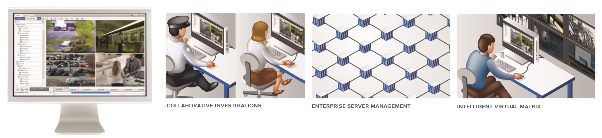

{kind=link}
{kind=link}
Avigilon Control Center (ACC) is an easy to use video management software, and has optimized how security professionals manage and interact with high definition video. As a distributed network platform with enterprise-class reliability, Avigilon Control Center is able to efficiently capture, manage and store high definition surveillance video while intelligently managing bandwidth and storage. Avigilon Control Center can be pre-installed and configured on an Avigilon High Definition Video Appliance, Network Video Recorder (NVR) with the industry’s highest NVR network throughput or work as stand-alone software, to meet the needs of a wide variety of installations.
Avigilon Control Center records and manages both video and audio from the Avigilon™ line of megapixel cameras (from 1 – 5 MP and 4
– 7K based on horizontal resolution). ACC can seamlessly integrate with conventional analog cameras, along with a broad range of third- party IP cameras and encoders, giving you the ability to build a hybrid system – providing you with a budget-conscious migration from analog to digital. ACC software’s easy-to-use interface allows personnel to evaluate and respond to events with minimal training.

Avigilon Control Center uses our patented HDSM™ software technology to efficiently compress and preserve image quality while intelligently managing HD image transmission throughout the Avigilon system — sending only the requested portions of captured images
to operator workstations. This technology delivers exceptional image quality while providing immediate savings in transmission bandwidth allowing operators to use less powerful workstations and thereby reducing
costs. Our HDSM technology leverages leading imaging, hardware, data compression and information technologies to maximize performance of the Avigilon system.
KEY FEATURES
- Easiest-to-use interface on the market
- Collaborative investigations
- Resilient enterprise server management
- Centralized system administration
- Intelligent virtual matrix
- Multi-megapixel high dynamic range image display
- Data protection and storage management
- Integrated graphic mapping for system layout
- HD recording and playback timeline
- Bandwidth management and remote viewing
- Bookmark and export HD surveillance footage
- Advanced video search
Advanced Control Center Features
Alarm Escalation
- Allows the creation of complete end-to-end workflows for the monitoring, assignment, and acknowledgement of
ACC Mobile
- Provides push alarm notifications, access to live and recorded video, and integrated audio talkdown from Android and iOS mobile
POS Transaction Engine
- Link HD surveillance footage (viewed instantly) with transaction data to address compliance requirements and reduce shrinkage and
License Plate Recognition
- Detects specific regional license plates as they appear in the camera field of view to monitor vehicle
Self-Learning Video Analytics
- Configure custom video analytics based events as alarm and rule
Acquisition Manager
- Ensures that all Avigilon cameras, regardless of resolution, are configured to collect exceptional HD and Ultra HD image quality over a wide range of lighting
Simple Camera and Server Installation
- Plug-and-play capabilities for NVRs and cameras that automatically identify themselves on the network, without manual configuration or searching — eliminating complex network
Detailed Management, Monitoring, and Reporting of System Status and Security
- Detailed logs of storage, network, and overall system status to ensure the highest possible system uptime for critical
Scalable Integration with Legacy Systems
- Distributed architecture features a .NET-based API that can easily be integrated with other systems, such as access control and building management.
CORE, STANDARD & ENTERPRISE
|
|
To create a system most suited for your surveillance needs, the Avigilon Control Center software is offered in three editions: Core, Standard and Enterprise. The Enterprise edition includes more advanced features for a sophisticated solution, whereas the Standard edition is used for more focused needs or for those looking to transition to HD surveillance in a cost-effective way. ACC Core is an entry-level version of our award-winning software that delivers advanced high definition surveillance capabilities, ease of use, and superior image quality to smaller implementations. No matter what the size of your installation, you can customize a solution that is right for you.
| Client | Core | Standard | Enterprise |
| Powerful, easy-to-use client interface | Yes | Yes | Yes |
| Self-learning video analytics overlay | Yes | Yes | Yes |
| Web browser client interface | Yes | Yes | Yes |
| Joystick support | Yes | Yes | Yes |
| ACC Mobile / Gateway | Yes | Yes | Yes |
| Saved views | No | Yes | Yes |
| Maps | No | Yes | Yes |
| Web pages | No | Yes | Yes |
| Windows user authentication | No | No | Yes |
| Editable Site View | Yes | Yes | Yes |
| Intelligent Virtual Matrix | No | No | Yes |
| Collaborative investigations | No | No | Yes |
| Recording, Searching and Playback | Core | Standard | Enterprise |
| Hourly configurable recording schedule | Yes | Yes | Yes |
| Intelligent motion search | Yes | Yes | Yes |
| Thumbnail search | Yes | Yes | Yes |
| Event search | Yes | Yes | Yes |
| Multi-camera export | Yes | Yes | Yes |
| Live export | Yes | Yes | Yes |
| POS transaction search | No | Yes | Yes |
| Alarm search | No | No | Yes |
| License plate event search | No | No | Yes |
| Add-On Modules and Integrations | Core | Standard | Enterprise |
| Point of Sale Transaction Engine | No | Yes | Yes |
| Avigilon developed and supported integrations | No | Yes* | Yes |
| 3rd party system integrations | No | Yes | Yes |
| Additional Features | Core | Standard | Enterprise |
| E-Mail event notification (motion & system event) | Yes | Yes | Yes |
| Central station notifications | No | Yes | Yes |
| Digital input email trigger | No | Yes | Yes |
| Manual digital output trigger | No | Yes | Yes |
| Audio recording | No | Yes | Yes |
| Audio output | No | Yes | Yes |
| Rule triggers | No | 3 | Unlimited |
| Self-learning video analytics event configuration | No | Yes | Yes |
| Redundant recording | No | No | Yes |
| Failover connections | No | No | Yes |
| Alarm escalation | No | No | Yes |
| Scheduled and one-time video archive | No | No | Yes |
| License Plate Recognition | No | No | Yes |
Detailed Product Features
Integration Options
- Records and manages video from the full range of Avigilon high definition
- Monitor video and alarms remotely via a mobile
- Provides access to system video from a wide range of web
- Supports the recording and management of a wide range of third-
party video and audio sources
- Supports the control of digital input triggers and triggering digital outputs through an I/O
- The Avigilon Application Programming Interface (API) enables the simple integration of Avigilon video surveillance with third-party applications.
- The Alarms tab provides the ability to monitor live alarm events received by access systems integrated with the Avigilon software. Users are given the ability to assign, acknowledge and investigate alarm
- The Armed Image Panels display live alarms as they are triggered within the video monitoring workspace, and provide the ability to acknowledge and investigate the live
- Integration alarms only need to be acknowledged in one system to be marked as acknowledged and processed in
- Avigilon develops and maintains integrations to a variety of 3rd party applications. The current list of available integrations is provided here: http://avigilon.com/support-and-downloads/for-software/acc- integration-and-plug-in-downloads/
- Avigilon offers an SDK for 3rd parties to create system integrations with the Avigilon Control Center software. Some of the available integrations are listed here: http://avigilon.com/support-and- downloads/for-software/system-integration-features/
- Receives and translates transaction information from point-of-sale sources in multiple encoding
- Provides the ability to link point-of-sale sources with video for the ability to monitor and review sales
- Rules can be used to generate events based on point-of-sale transaction
- Rules can be used to generate license plate notifications.
- Live license plate recognition is available through an image panel overlay.
Recording
- Streams live and recorded video up to 60 frames per
- Support prioritizing streaming at 30 frames per second on 4K (8MP) cameras.
- Streams live and recorded video from cameras up to a resolution of 7K (30 MP) — 6720 x
- Decompresses 264 video through the client graphics card to help leverage the client’s total processing power.
- No proprietary recording hardware, hardware multiplexer or time- division technology is required for running the Avigilon
- Scalable to support up to 100 servers and/or 10,000 cameras per
- All recorded video and audio is digitally signed using 256-bit encryption so video can be authenticated for evidentiary
- Secure, command and control communication using SSL to protect against eavesdropping or tampering.
- External system alarms can be can be pre-selected and configured to be monitored and trigger event driven video
- Video and audio recording can be defined by a recording schedule assigned to each video
- Recording schedules are based on event types that trigger video recording over a time period each day per
- Video recording can also occur manually by user triggered
- Alarms and rules can be triggered by self-learning video analytics based events.
- Each recorded event includes a pre-event and post-event recording option to provide context for a given
- Reference frame recording is an option when no events are
- Motion detection is provided for each individual video source with adjustable sensitivity, threshold and detection
- Primary and secondary video streams from each H.264 video source are recorded and maintained for a set amount of time before the primary stream is discarded as a means of increasing record
- The maximum recorded video retention time can be set for each video
Security
- Each system user can be granted specific live monitoring, investigative, system administration, and device
- Child sites can be connected to a parent site to create site
- All user, group, and permission settings for a child site can be synchronized with and controlled by a parent
- A corporate ranking hierarchy can be set up to accurately reflect a company’s administrative
- Each system user can only access features that are subordinate to their rank within the system
- Device access can be specific to cameras, encoders, maps, web pages and saved
- Windows Active Directory users can be imported and added to Avigilon Control Center Client
- Imported Windows users can use their Windows credentials to access
the Avigilon system.
- Permission groups can be copied to different sites and automatically applied to users imported from the same Active
- Ability to securely encrypt camera control traffic (if supported by the camera).
- Change camera authentication without disconnecting from a
System Administration
- Recorded video can be automatically archived on a
- Automatic archive can be configured to span a specific time period, cameras, or age of
- The system can be set to delete the oldest archived video when the disk is full to make room for new video
- Archived video can be saved to a local folder, mapped network drive, network storage area, USB or direct attached
- Email notifications are available to tell users and system administrators when an event or system health error occurs. Emails can be set to occur on a schedule, and can include camera snapshots related to an
- Notifications can be sent to a central monitoring station whenever a configured event
- The system maintains an information log which can be used to trigger rules or external
- When a rule is triggered, the system can be set to execute actions in response.
- Users can be set to receive customized on-screen messages related
to a rule event.
- On-screen messages are displayed in one location and the importance of each message is color
- A maintenance log and audit trail of all system errors and events is
accessible through the client software and the Admin Tool.
- Monitor system health from one The status of connected Sites, servers and devices can be exported in PDF format.
- System wide software updates can be performed from any client with access to the
- System configuration data, including device connection details, can be backed up and restored to new servers in the
Video and Audio Controls
- License plate recognition is performed within a specific region of a camera’s field of view. Detected license plate data is stored with the video
- A Watch List event can be created and used to monitor for the appearance of specific license plates.
- Pan, tilt, zoom (PTZ) controls through the RS-485 interface of a video source can be used and configured by the Avigilon
- The network settings for a video and audio source can be changed through the Avigilon
- Each camera’s image quality and image rate can be changed without affecting the settings of other
- The system automatically displays an H.264 camera’s secondary stream for live viewing when there is insufficient bandwidth to display the primary
- A camera’s exposure, iris, IR filter, backlight compensation, gain, priority, sharpening, saturation, focus, and white balance can be set through the Avigilon
- The image dimensions of JPEG2000 camera video can be
- Camera image can be rotated 90°, 180° or 270°.
- Privacy zones can be added to a camera’s field of view to block private areas in live and recorded
- Manually triggered video recording can be set to stop after a maximum recording
- Audio input, output, gain and volume can be
- Optional full-duplex two-way audio
- Audio sources can be linked to any video source that is connected to the system.
System Display and Control
- Joysticks to control video display and specific system
- Customizable keyboard commands.
- 1 to 64 video streams can be displayed simultaneously on a single monitor.
- Live and recorded video can be displayed in non-standard, customizable layouts.
- Save views for
- The system can be set to bias video display to a lower frame rate or to a lower image resolution if the client network bandwidth or client processing power is insufficient to display the full frame rate and image
- Information about the camera and scene can be displayed over live or recorded streaming
- The Video Analytics Activity overlay displays a color-coded bounding box around moving objects categorized as humans or
- Configure the ability to display analytics activity for individual cameras or for the
- The ability to stream video and audio is limited only by the system hardware
- The application window display can be shared with other users for collaborative investigations while viewing both live and recorded video.
- Live and recorded video and audio can be streamed simultaneously on the same
- Avigilon Virtual Matrix software can be used to provide remote control of multiple monitor displays, including video walls, that can be controlled by remote users with the appropriate rights and permissions.
- Avigilon Virtual Matrix software can display video, maps, and web pages from multiple Sites
- The same live or recorded video stream can be viewed at different zoom levels and areas of
- Switch from live to recorded video on demand for an instant replay of recently recorded
- Cycle through a series of opened views (guard tour) based on a specified interval.
- All video sources connected to the system are
- Drag and drop a video source from a tree of video sources into a window for live or recorded video and audio
- Drag and drop a saved view from a tree of views into a window for live or recorded video and audio
- Configure how the tree of video sources, maps, web pages and views is displayed.
- Armed image panel is one or more regions in a window for displaying
video directly linked to triggered alarms and rules.
- Alarms can be acknowledged directly from an armed image
- Digital outputs can be manually triggered from the video monitoring area.
Maps
- Create a map to represent the physical location of cameras and
other devices throughout the surveillance system.
- Maps are created from images stored in JPEG, BMP, PNG, or GIF image formats.
- Maps can contain links to other maps and reference a subsection of a camera’s field of
- Drag and drop a video source from a map into a window for live or recorded video and audio
- Cameras on a map are highlighted if the camera is linked to an alarm that has been
- A map within a map is highlighted if it contains a camera that is linked to an alarm that has been triggered.
Available Languages
- Arabic Chinese (Simplified)
- Chinese (Traditional) Czech
- Danish Dutch
- English Finnish
- French German
- Hebrew Italian
- Japanese Korean
- Norwegian Polish
- Portuguese (Brazil) Portuguese (Portugal)
- Russian Slovak
- Spanish Swedish
- Turkish